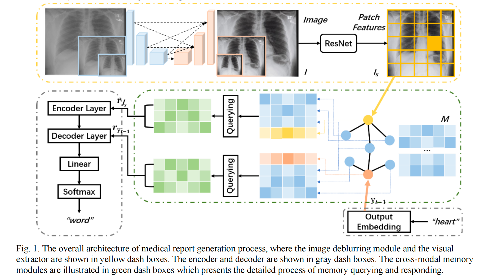
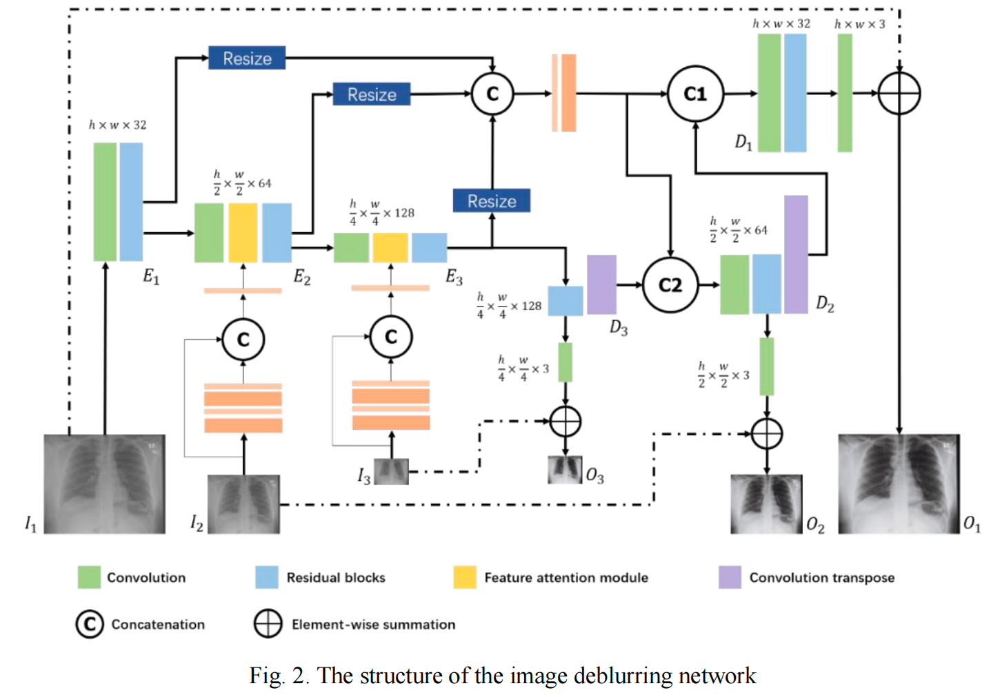

兼顾全局结构与局部细节Global structure and local detail
通过不同尺度的特征表示处理医学影像中的结构信息与细粒度视觉线索。
Use features at multiple resolutions to represent large structures and fine-grained cues.
MEDICAL IMAGING · IJCNN 2024
面向医学报告生成中图像模糊造成的视觉信息损失，在报告生成前引入多尺度图像去模糊策略，改善医学图像输入质量及下游文本生成效果。
A multi-scale image deblurring strategy that improves visual input quality before automated medical report generation.
医学报告生成不仅依赖语言模型，也依赖输入影像是否保留了足够清晰、可辨识的临床视觉特征。
Report quality depends not only on language generation but also on the clarity of clinically relevant visual features.
图像模糊可能弱化边界、纹理及局部异常等视觉线索，并进一步影响视觉特征提取与文本生成。本研究将图像增强置于报告生成前端，通过多尺度信息恢复改善输入质量，再评估其对下游报告生成的影响。
Blur can suppress boundaries, textures, and local abnormalities, weakening downstream visual representations. The study inserts multi-scale restoration before report generation and evaluates its effect on generated text.
先从整体报告生成架构理解图像增强的作用，再展开其中的多尺度去模糊网络。
The first figure presents the full report-generation architecture; the second expands the multi-scale deblurring network.


核心不是单独追求更清晰的图片，而是验证图像增强能否真正帮助下游报告生成。
The goal is not image sharpness alone, but measurable benefit to downstream report generation.
通过不同尺度的特征表示处理医学影像中的结构信息与细粒度视觉线索。
Use features at multiple resolutions to represent large structures and fine-grained cues.
将增强后的图像接入报告生成链路，观察图像质量改善是否能转化为报告生成准确性的提升。
Connect restored images to report generation and test whether visual improvements translate to better text.
通过原始输入与增强输入的对照，以及不同模块设置的实验，分析去模糊策略的实际贡献。
Compare original and enhanced inputs and isolate module contributions through controlled experiments.
参与多尺度图像去模糊与医学报告生成相关实验、结果分析及论文工作。
Contributed to experiments, analysis, and paper development across deblurring and report generation.
发表于 2024 International Joint Conference on Neural Networks。
Published at the 2024 International Joint Conference on Neural Networks.